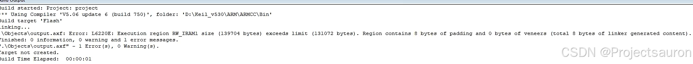

浅析 Keil 中的 sct 文件
[toc]
一、程序的存储与运行
1、存储
程序编译后，应用程序中所有具有同一性质的数据(包括代码)被归到一个域，程序在存储或运行的时候，不同的域会呈现不同的状态，这些域的意义如下：
- **
Code**：即代码域，它指的是编译器生成的机器指令，这些内容被存储到 ROM 区。 - **
RO-data**：Read Only data，即只读数据域，它指程序中用到的只读数据，这些数据被存储在 ROM 区，因而程序不能修改其内容。- 例如 C 语言中 const 关键字定义的变量就是典型的 RO-data。
- **
RW-data**：Read Write data，即可读写数据域，它指初始化为”非0值”的可读写数据，程序刚运行时，这些数据具有非0的初始值，且运行的时候它们会常驻在RAM区，因而应用程序可以修改其内容。- 例如 C 语言中使用定义的全局变量，且定义时赋予”非 0 值”给该变量进行初始化。
- **
ZI-data**：Zero Initialie data，即 0 初始化数据，它指初始化为”0 值”的可读写数据域，它与RW-data的区别是程序刚运行时这些数据初始值全都为 0，而后续运行过程与RW-data的性质一样，它们也常驻在 RAM 区，因而应用程序可以更改其内容。- 例如 C 语言中使用定义的全局变量，且定义时赋予”0 值”给该变量进行初始化
- 若定义该变量时没有赋予初始值，编译器会把它当
ZI-data来对待，初始化为 0；
ZI-data的栈空间（Stack）及堆空间（Heap）：- 在 C 语言中，函数内部定义的局部变量属于栈空间，进入函数的时候从向栈空间申请内存给局部变量，退出时释放局部变量，归还内存空间。
- 使用 malloc 动态分配的变量属于堆空间。
- 在程序中的栈空间和堆空间都是属于
ZI-data区域的，这些空间都会被初始值化为 0 值。编译器给出的ZI-data占用的空间值中包含了堆栈的大小（经实际测试，若程序中完全没有使用 malloc 动态申请堆空间，编译器会优化，不把堆空间计算在内）。
详细内容可以参考如下文章：
STM32 map 文件浅析 、单片机内存区域划分
总结如下：
| 程序组件 | 所属类别 |
|---|---|
| 机器代码指令 | Code |
| 常量 | RO-data |
| 初值非0的全局变量 | RW-data |
| 初值为0的全局变量 | ZI-data |
| 局部变量 | ZI-data 栈空间 |
| 使用malloc动态分配的空间 | ZI-data 堆空间 |
2、加载、运行
RW-data 和 ZI-data 它们仅仅是初始值不一样而已，为什么编译器非要把它们区分开？原因如下：
应用程序具有静止状态和运行状态。静止态的程序被存储在非易失存储器中，如 STM32 的内部 FLASH，因而系统掉电后也能正常保存。但是当程序在运行状态的时候，程序常常需要修改一些暂存数据，由于运行速度的要求，这些数据往往存放在内存中(RAM)，掉电后这些数据会丢失。因此，程序在静止与运行的时候它在存储器中的表现是不一样的，见下图。

程序在存储状态时，RO section 及 RW Section 都被保存在 ROM 区。当程序开始运行时，内核直接从 ROM 中读取代码，并且在执行主体代码前，会先执行一段加载代码，它把 RW Section 数据从 ROM 复制到 RAM，并且在 RAM 加入 ZI Section，ZI Section 的数据都被初始化为 0。加载完后 RAM 区准备完毕，正式开始执行主体程序。
编译生成的 RW-data 的数据属于图中的 RW Section，ZI-data 的数据属于图中的 ZI Section。是否需要掉电保存，这就是把 RW-data 与 ZI-data 区别开来的原因：
- 因为在 RAM 创建数据的时候，默认值为 0，
- 但如果有的数据要求初值非 0，那就需要==使用 ROM 记录该初始值，运行时再复制到 RAM==。
STM32 的 RO 区域不需要加载到 SRAM，内核直接从 FLASH 读取指令运行。计算机系统的应用程序运行过程很类似，不过计算机系统的程序在存储状态时位于硬盘，执行的时候甚至会把上述的 RO 区域(代码、只读数据)加载到内存，加快运行速度，还有虚拟内存管理单元(MMU)辅助加载数据，使得可以运行比物理内存还大的应用程序。而 STM32 没有 MMU，所以无法支持 Linux 系统。
当程序存储到 STM32 芯片的内部 FLASH 时(即 ROM 区)，它占用的空间是 Code、RO-data 及 RW-data 的总和，所以如果这些内容比STM32 芯片的 FLASH 空间大，程序就无法被正常保存了。当程序在执行的时候，需要占用内部 SRAM 空间(即 RAM 区)，占用的空间包括RW-data 和 ZI-data。应用程序在各个状态时各区域的组成见下表。
| 程序状态与区域 | 组成 |
|---|---|
| 程序执行时的只读区域(RO) | Code + RO data |
| 程序执行时的可读写区域(RW) | RW data + ZI data |
| 程序存储时占用的ROM区 | Code + RO data + RW data |
而这些区域的起始地址和大小，以及各个函数变量应该放在哪个存储器区域中就是由本文要讲的 sct 文件定义的。
二、sct 分散加载文件
1、简介
当工程按默认配置构建时，MDK 会根据我们选择的芯片型号，获知芯片的内部 FLASH 及内部 SRAM 存储器概况，生成一个以工程名命名的后缀为 *.sct 的分散加载文件(Linker Control File，scatter loading)，链接器根据该文件的配置分配各个节区地址，生成分散加载代码，因此我们通过修改该文件可以定制具体节区的存储位置。
- 可以设置源文件中定义的所有变量自动按地址分配到外部 SDRAM，这样就不需要再使用关键字
__attribute__按具体地址来指定了； - 利用它还可以控制代码的加载区与执行区的位置，例如可以把程序代码存储到单位容量价格便宜的 NAND-FLASH 中，但在 NAND-FLASH 中的代码是不能像内部 FLASH 的代码那样直接提供给内核运行的，这时可通过修改分散加载文件，把代码加载区设定为 NAND-FLASH 的程序位置，而程序的执行区设定为 SDRAM 中的位置，这样链接器就会生成一个配套的分散加载代码，该代码会把 NAND-FLASH 中的代码加载到 SDRAM 中，内核再从 SDRAM 中运行主体代码，大部分运行 Linux 系统的代码都是这样加载的。
2、文件格式
下面是一个由 MDK 默认生成的 sct 文件：
我使用的是 STM32F407，不同的芯片型号内存不一样
1 | LR_IROM1 0x08000000 0x00080000 { ; load region size_region（加载域，基地址空间大小） |
在默认的 sct 文件配置中仅分配了 Code、RO-data、RW-data 及 ZI-data 这些大区域的地址，链接时各个节区(函数、变量等)直接根据属性排列到具体的地址空间。
sct 文件中主要包含描述加载域及执行域的部分，一个文件中可包含有多个加载域，而一个加载域可由多个部分的执行域组成。同等级的域之间使用花括号”{}”分隔开，最外层的是加载域，第二层”{}”内的是执行域，其整体结构见下图。

2.1 加载域
sct 文件的加载域格式如下：
1 | 加载域名 (基地址 | ("+"地址偏移)) [属性列表] [最大容量] |
- 加载域名： 在 map 文件中的描述会使用名称
LR_IROM1来标识空间。 - 基地址 + 地址偏移：基地址为 STM32 内部 FLASH 的基地址 0x08000000，地址偏移可选
- 属性列表： 指出当前加载域的属性列表。加载域可以继承先前加载域的属性。主要有以下这些（多个使用时以空格间隔开）：
ABSOLUTE： 指定将内容放置在链接后不会更改的基地址所表示的固定地址上。 这是默认值 ，除非使用了PI或RELOC。ALIGN alignment： 指定对齐约束。alignment为阿拉伯数字，最小为 4，必须是 2 的整数次幂。例如，ALIGN 4。基地址的值必须符合该对齐约束。如果使用了+offset，连接器将计算并使用对齐后的地址。NOCOMPRESS： RW 数据压缩默认情况下处于启用状态。 使用NOCOMPRESS关键字可以指定在最终镜像中不得压缩加载域的内容。OVERLAY： 使用 OVERLAY 关键字可以在同一地址具有多个加载域。 ARM 工具不提供覆盖机制。 要在同一地址使用多个加载域，必须提供自己的叠加层管理器。 该属性不能被继承。PI： 表示当前域与位置无关。 内容不依赖于任何固定地址，并且在链接后无需任何额外处理即可移动。（如果镜像中包含 XO，则不支持此属性。）PROTECTED： 该关键字将阻止以下情况：- Overlapping of load regions
- Veneer sharing
- String sharing with the –merge option.
RELOC： 指出当前域是可重定位的。 内容取决于固定地址。 输出重定位信息，以使内容可以通过另一个工具移动到另一个位置。（如果镜像中包含 XO，则不支持此属性。）
- 最大容量： 最大容量说明了这个加载域可使用的最大空间，该配置也是可选的，如果加上这个配置后，当链接器发现工程要分配到该区域的空间比容量还大，它会在工程构建过程给出提示。STM32 内部 FLASH 的大小 0x00080000（512KB）
有关属性的继承，参考：
1 | LR1 0x8000 PI ; 默认为 ABSOLUTE |
2.2 执行域
1 | 执行域名 (基地址 | "+"地址偏移) [属性列表] [最大容量 ] |
执行域的格式与加载域是类似的，区别只是输入节区的描述有所不同。
属性列表：
ABSOLUTE：指定将内容放置在链接后不会更改的base_address所表示的固定地址上。ALIGN alignment：指定对齐约束。alignment为阿拉伯数字，最小为 4，必须是 2 的整数次幂。例如，ALIGN 4。base_address的值必须符合该对齐约束。如果使用了 +offset ，连接器将计算并使用对齐后的地址。（==执行域上的 ALIGN 属性将导致加载地址和执行地址都对齐==）ALIGNALL value：增加执行域中各节的对齐方式。value 的值必须是 2 的正幂，并且必须大于或等于 4。ANY_SIZE max_size：指定 armlink 可以用未分配的节填充的执行域内的最大大小。max_size 必须小于或等于域的大小。EMPTY [–]length：在执行域中保留给定大小的空内存块，通常由堆或堆栈使用。 带有 EMPTY 属性的域中不能放置任何节。FILL value：创建包含 value 值的链接器生成的区域（例如，FILL 0xFFFFFFFF）。FILL 属性可以替换以下组合：EMPTY ZEROPAD PADVALUE。FIXED：固定地址。 链接器会尝试使执行地址等于加载地址。 这使得该域成为根区域。 如果不可能，则链接器会产生错误。NOCOMPRESS：RW 数据压缩默认情况下处于启用状态。 使用NOCOMPRESS关键字，可以指定执行域中的 RW 数据不得在最终镜像中压缩。OVERLAY：用于地址范围重叠的节。 如果连续的执行域具有相同的 +offset ，那么它们将被赋予相同的基地址。PADVALUE value：定义用于填充的值。例如，EXEC 0x10000 PADVALUE 0xFFFFFFFF EMPTY ZEROPAD 0x2000表示创建一个大小为 0x2000 且使用 0xFFFFFFFF 填充的域。PI：该域仅包含与位置无关的节。 内容不依赖于任何固定地址，并且在链接后无需任何额外处理即可移动。（如果镜像中包含仅执行节（XO），则不支持此属性）SORTTYPE algorithm：指定执行域的排序算法，例如ER1 +0 SORTTYPE CallTree。该属性的优先级高于通过连接器参数 –sort 算法 的方式。UNINIT：用于创建包含未初始化数据或内存映射 I/O 的执行域。ZEROPAD：零初始化的段作为零填充块写入 ELF 文件。只有根执行域可以使用ZEROPAD属性进行零初始化。在非根执行域中使用 ZEROPAD 属性会生成警告，并忽略该属性。
本例中包含了 ER_IROM1 及 RW_IRAM1 两个执行域，它们分别对应描述了 STM32 的内部 FLASH 及内部 SRAM 的基地址及空间大小。而它们内部的“输入节区描述”说明了哪些节区要存储到这些空间，链接器会根据它来处理编排这些节区。
2.3 输入节区描述
1 | 模块选择样式 “(“输入节区样式”,” “+“输入节区属性”)” |
- 模块选择样式： 模块选择样式可用于选择 o 及 lib 目标文件作为输入节区，它可以直接使用目标文件名或“**
*”通配符，也可以使用“.ANY**”。- 使用语句“
.o”可以选择所有 o 文件，使用“.lib”可以选择所有 lib 文件，使用“*”或“.ANY”可以选择所有的 o 文件及 lib 文件。 - 其中“
.ANY”选择语句的优先级是最低的，所有其它选择语句选择完剩下的数据才会被“.ANY”语句选中。
- 使用语句“
- 输入节区样式： 通过输入节区样式可以选择要控制的节区。“
(RESET， +First)” 语句的 RESET 就是输入节区样式，它选择 RESET 的节区，并使用后面介绍的节区特性控制字“+First”表示它要存储到本区域的第一个地址。 - “
(InRoot$$Sections)” 是一个链接器支持的特殊选择符号，它可以选择所有标准库里要求存储到 root 区域的节区。 - 输入符号样式： 可以选择要控制的符号，符号样式需要使用“
:gdef:”来修饰。例如可以使用“*(:gdef:Value_Test)”来控制选择符号“Value_Test”。 - 输入节区属性： 通过在模块选择样式后面加入输入节区属性，可以选择样式中不同的内容，每个节区属性描述符前要写一个“**
+”号，使用空格或“,**”号分隔开，可以使用的节区属性描述符见下表。
| 节区属性描述符 | 说明 |
|---|---|
| RO-CODE、CODE | 只读代码段 |
| RO-DATA、CONST | 只读数据段 |
| RO及TEXT | 包括 RO-CODE 和 RO-DATA |
| RW-DATA | 可读写数据段 |
| RW-CODE | 可读写代码段 |
| RW、DATA | 包括 RW-DATA 和 RW-CODE |
| ZI及BSS | 初始化为 0 的可读写数据段 |
| XO | 只可执行的区域 |
| ENTRY | 节区的入口点 |
例如，示例文件中使用”
.ANY(+RO)“选择剩余所有节区 RO 属性的内容都分配到执行域 ER_IROM1 中，使用”.ANY(+RW +ZI)“选择剩余所有节区 RW 及 ZI 属性的内容都分配到执行域 RW_IRAM1中。
*和.ANY的区别*和.ANY大部分情况下都是通用的，不过它们有一个很细节的区别，那就是如果使用的是.ANY，比如上面的例子中ER_IROM1里的，如果这个 ROM 的数据满了，那它就会从下面的 RAM 中去申请内存来存储数据；而如果定义为了*(+RO)和*(+XO)，该 ROM 区内存满了之后，则不会继续往下面定义的分区申请内存，如下图：
改成*之后报错如下，提示内存不够：
另外，.ANY还可以设置优先级，其中.ANY2的优先级比.ANY1的优先级高。
- 节区特性：节区特性可以使用”
+FIRST“或”+LAST“选项配置它要存储到的位置，FIRST存储到区域的头部，LAST存储到尾部。通常重要的节区会放在头部，而 CheckSum(校验和)之类的数据会放在尾部。- 例如示例文件中使用”
(RESET,+First)“选择了 RESET 节区，并要求把它放置到本区域第一个位置，而 RESET 是工程启动代码中定义的向量表，该向量表中定义的堆栈顶和复位向量指针必须要存储在内部 FLASH 的前两个地址，这样 STM32 才能正常启动（详见 STM32 芯片启动过程），所以必须使用 FIRST 控制它们存储到首地址。
- 例如示例文件中使用”
总的来说，我们的 sct 示例文件配置如下：
- 程序的加载域为内部 FLASH 的 0x08000000，最大空间为 0x00100000；程
- 序的执行基地址与加载基地址相同，其中 RESET 节区定义的向量表要存储在内部 FLASH 的首地址，且所有 o 文件及 lib 文件的 RO 属性内容都存储在内部 FLASH 中；
- 程序执行时 RW 及 ZI 区域都存储在以 0x20000000 为基地址，大小为 0x00020000 的空间。
链接器根据 sct 文件链接，链接后各个节区、符号的具体地址信息可以在 map 文件中查看。
2.4 设置堆栈
如果使用了分散加载文件，那么有些连接器定义的符号就变成了未定义。这些符号就包含堆栈的定义函数所使用的符号，因此，使用的是分散加载文件时，就必须要手动设置栈和堆。方法主要有以下两种：
- 在分散文件中使用下列方法之一
- 定义名为
ARM_LIB_STACK和ARM_LIB_HEAP的单独的栈和单独的堆域。 - 定义包含堆栈和堆的组合域，名为
ARM_LIB_STACKHEAP。
- 定义名为
- 通过重新实现
__user_setup_stackheap()来设置堆和堆栈边界。（在 stm32 中的.s启动文件中，使用的正是这种方法）
ARM 编译套件提供了两种内存模型：
One-Region Model： 应用程序的栈和堆在相同的内存域中彼此接近，在此运行时内存模型中，当分配了新的堆空间时（例如，在调用 malloc() 时），将根据栈指针的值检查堆。

Two-Region Model： 应用程序的栈和堆放置在单独的内存域中。要使用 Two-Region Model，必须导入函数__use_two_region_memory。在这个运行时内存模型中，当分配新的堆空间时，将根据堆限制检查堆。
注意，在这两种运行时内存模型中，栈的增长都是未检查的。
在 Keil 中，一般都是用的 Two-Region Model。无论哪一种方式，都需要我们自己来定义。在 Keil 项目中，通常会在启动文件(.s) 中指定内存模型。
下面就来看一下这两种方法的实现。
2.4.1 在分散加载文件中实现
ARM C 库提供了 __user_setup_stackheap() 函数的多种实现，该函数会使用在分散加载文件中定义的与堆和栈相关的符号来生成堆栈。
如果要选择 Two-Region Model，则需要在分散文件中定义两个特殊的执行域，分别为 ARM_LIB_HEAP 和 ARM_LIB_STACK 。两个域都有 EMPTY 属性。这样，ARM C 库将不再使用默认的 __user_setup_stackheap() ，而是使用如下符号定义栈：
Image$$ARM_LIB_STACK$$BaseImage$$ARM_LIB_STACK$$ZI$$LimitImage$$ARM_LIB_HEAP$$BaseImage$$ARM_LIB_HEAP$$ZI$$Limit
只能指定一个 ARM_LIB_STACK 域和一个 ARM_LIB_HEAP 域，并且必须分配一个大小，例如，在自己的分散加载文件中如下来定义栈和堆：
1 | LOAD_FLASH |
如果要选择 One-Region Model，则必须在分散加载文件中定义一个名为 ARM_LIB_STACKHEAP 的执行域，当前域也同样是 EMPTY 属性。这样， __user_setup_stackheap() 将使用以下符号：Image$$ARM_LIB_STACKHEAP$$Base 、 Image$$ARM_LIB_STACKHEAP$$ZI$$Limit 。例如，在自己的分散加载文件中如下来定义栈和堆：
1 | LOAD_FLASH ... |
2.4.2 实现函数 __user_setup_stackheap()
如果我们在自己的代码中重新实现 __user_setup_stackheap() ，则此方法将覆盖所有库中相同的实现。在我们的项目中，一般会在启动文件（例如 STM32 中的 startup_stm32fXXX.s ）实现 __user_setup_stackheap() 函数，如下图：
注意，如果要选择
Two-Region Model，则必须要引入函数__use_two_region_memory
3、配置 sct 文件
通过 Use Memory Layout from Target Dialog 选项可以选择是使用 MDK 生成还是使用用户自定义的 sct 文件。
取消选择后，即可自己设置 sct 文件，点击下面的 Edit 即可编辑 sct 文件：

可以看到，其地址、大小和如下设置是对应的：

现在尝试分配一个变量到 RAM 中：
1 | uint32_t gTest __attribute__((section(".my_data"))); |
sct 文件修改如下：
1 | LR_IROM1 0x08000000 0x00080000 { ; load region size_region |
最终打印出来的结果为：

map 文件：
当然，你如果对分散加载文件的使用并不熟悉或者是配置起来比较麻烦，也可以通过如下方式：

右键单击想要设置的文件，选中 Options for File '...'，通过这几个选项就可以很方便地把代码放在我们想要放入的内存区域：
分散加载文件 scatter files 对本文做了一些补充说明